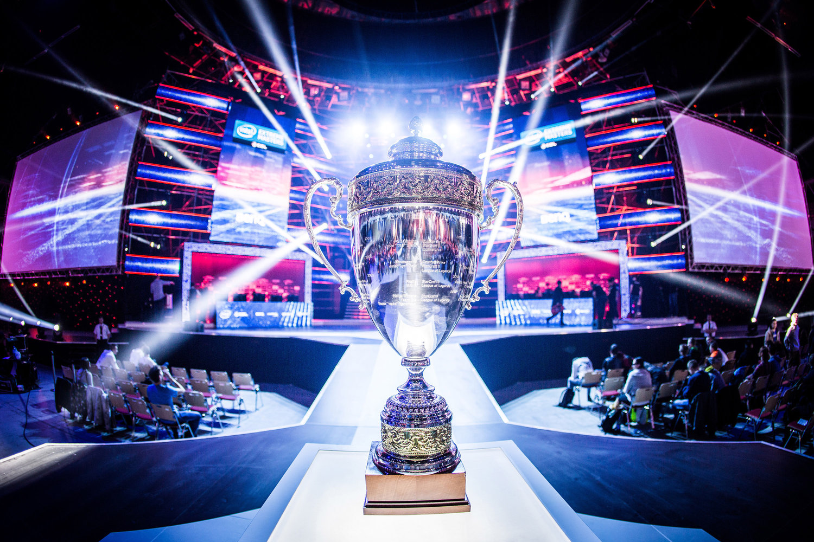
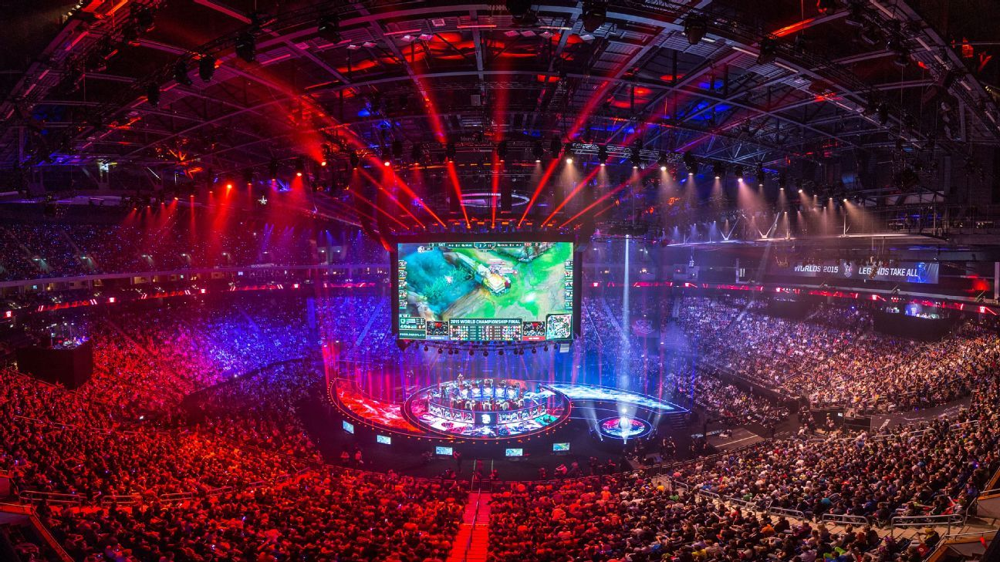

- 
-

-

-

-

-

-

- 
I began my journey in eSports shortly after the release of Halo 3 with my introduction to MLG and Gamebattles. Up until November 2007 I was stuck with dial up internet and never had the chance to explore Xbox Live before then. Once I started I was hooked and started watching MLG broadcasts and getting excited for the upcoming Halo 3 season in 2008.
Through MLG I got my introduction to eSports and began exploring other games and events within the eSports ecosystem. I watched documentaries, followed other scenes such as Starcraft and Melee, and eventually started researching the origins of eSports.
In college I majored in History and wrote my thesis paper on broadcasting structures in eSports as compared to sports(was one of the only ways I could get my professor to let me write on eSports). In the years that followed I bounced around to various jobs and locations but I never stopped gaming or following eSports. I knew I wanted to do something in the eSports scene and originally I wanted nothing else than to become a professional gamer. Ultimately I never managed to attain that dream but I always had the idea of doing something with the history of eSports. After years of procrastinating I finally started this journey in 2018 with the mission of documenting the rich history of eSports and bringing that to a wider audience.
So I invite you to join me on this journey as we peel back the curtains and cover eSports in a way that few have done before. As time goes on I hope to bring higher quality content and to foster a community that loves eSports as much as I do.
-Dale 'Zarnerz' Holstein

The first episode of the eSports History Podcast that gives an introduction to eSports History and what direction it will be taking. If you're new here then I highly recommend checking this out first.
Long episode chronicalling the most dominant team in competetive Halo history "Final Boss" with special guest "Ogre 2" who was one of the members of this legendary team. From their early day's before they were officially known as "Final Boss" until their last official tournament we talk about all the twists and turns through the years. This is a must see video for any fans of the team or Halo eSports.

One of my biggest projects yet that covers the long history of Twin Galaxies and its role in the beginnings of competitve video gaming. Another must see piece of content that gives any eSports fan some perspective on how far we've come.